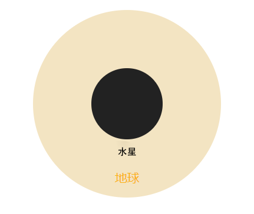

水星是太阳系中最小的行星，离太阳最近，体积只有地球的5.6%，质量也只有地球的5.5%。它也是离太阳最近的行星，只要花88个地球日就能绕太阳公转一圈。
此外，水星也是全太阳系地表温差最大的行星。它面向太阳的一面，温度高达430℃ ；而背对太阳的一面，温度则低至—170℃。换句话说，水星地表的温差能达到惊人的600℃。

大小和距离
水星的半径为1，516英里（2，440公里），比地球宽度略多于1/3。如果地球是五分镍币的大小，水星将和蓝莓一样大。

水星的平均距离为3600万英里（5800万公里），距离太阳有0.4个天文单位。一个天文单位（简称AU）是距离太阳到地球的距离。从这个距离，从太阳到水星需要3.2分钟的阳光。
轨道和旋转
水星高度偏心的蛋形轨道使地球距离太阳近2900万英里（4700万公里），距离太阳4300万英里（7000万公里）。它每88天绕太阳飞行一次，以每秒近29英里（47公里）的速度在太空中飞行，比任何其他行星都快。
水星在其轴上缓慢旋转，每59个地球日完成一次自转。但是，当水星在绕太阳的椭圆轨道上移动得最快时（它离太阳最近），每次旋转都不像大多数其他行星那样伴有日出和日落。早晨的太阳似乎短暂升起，从地球表面的某些部分再次升起。同样的事情在日落时分在地表的其他部分发生逆转。一个水星太阳日（一个完整的日夜周期）等于176个地球日——水星上只有两年多的时间。
水星的自转轴在绕太阳轨道的平面上只倾斜了2度。这意味着它几乎完全直立地旋转，所以不会像许多其他行星那样经历季节。
水星在其轴上缓慢旋转，每59个地球日完成一次自转。但是，当水星在绕太阳的椭圆轨道上移动得最快时（它离太阳最近），每次旋转都不像大多数其他行星那样伴有日出和日落。早晨的太阳似乎短暂升起，从地球表面的某些部分再次升起。同样的事情在日落时分在地表的其他部分发生逆转。一个水星太阳日（一个完整的日夜周期）等于176个地球日——水星上只有两年多的时间。
水星的自转轴在绕太阳轨道的平面上只倾斜了2度。这意味着它几乎完全直立地旋转，所以不会像许多其他行星那样经历季节。
结构和表面
水星是仅次于地球的第二密集行星。它有一个大型金属核心，半径约为1，289英里（2，074公里），约占地球半径的85%。有证据表明，它是部分熔融，或液体。水星的外壳，相当于地球的外壳（称为地壳和地壳），只有大约400公里（250英里）厚。
水星的大部分表面在人眼看来是灰褐色的。明亮的条纹被称为火山线。它们是在小行星或彗星撞击表面时形成的。在这样的撞击中释放出的巨大能量在地面上挖了一个大洞，并在撞击点下粉碎了大量的岩石。其中一些碎碎的材料被扔离陨石坑很远，然后落到地表，形成光线。碎石的细颗粒比大块反射的更反射，所以光线看起来更亮。空间环境——尘埃撞击和太阳风粒子——使光线随着时间而变暗。
水星表面的温度是极端的，无论冷热。白天，水星表面的温度可以达到华氏800度（430摄氏度）。由于地球没有大气层来保持这种热量，地表的夜间温度可以降至零下290华氏度（零下180摄氏度）。
水星的大部分表面在人眼看来是灰褐色的。明亮的条纹被称为火山线。它们是在小行星或彗星撞击表面时形成的。在这样的撞击中释放出的巨大能量在地面上挖了一个大洞，并在撞击点下粉碎了大量的岩石。其中一些碎碎的材料被扔离陨石坑很远，然后落到地表，形成光线。碎石的细颗粒比大块反射的更反射，所以光线看起来更亮。空间环境——尘埃撞击和太阳风粒子——使光线随着时间而变暗。
水星表面的温度是极端的，无论冷热。白天，水星表面的温度可以达到华氏800度（430摄氏度）。由于地球没有大气层来保持这种热量，地表的夜间温度可以降至零下290华氏度（零下180摄氏度）。
大气层
水星没有大气层，而是拥有由太阳风和撞击流星体从表面爆炸的原子组成的薄层。水星的外层主要由氧气、钠、氢、氦和钾组成。
磁气圈
相对于地球赤道，水星的磁场被抵消了。虽然水星表面的磁场强度只有地球的百分之一，但它与太阳风的磁场相互作用，有时会产生强烈的磁龙卷风，将快速、热的太阳风等离子体输送到地球表面。当离子撞击表面时，它们会敲掉中性带电原子，然后把它们送上高高的圆环。
生命潜力
水星的环境不利于我们所知道的生命。这个星球的温度和太阳辐射太极端了，生物体无法适应。
发现
1.水星有磁场
水星有一个能覆盖整个行星的稳定磁场，其强度能达到地球磁场的1.1%。这是由于在水星内部，也像地球一样，有一个液态的铁核。这已经足以构筑一个屏障，来抵御太阳风的侵袭了。
2.水星有冰
这是几十亿年前把水星撞得坑坑洼洼的那些小行星带来的。其中的部分冰，落入了水星北极的一些永远也不会晒到太阳的大坑里，就一直保存了下来。这意味着，水在太阳系中很可能是普遍存在的。
3.水星有过全球性的岩浆海洋
太阳光射到水星表面，会被地表的岩石反射回来；通过分析这些反射光，就可以确定水星表面岩石的化学成分。信使号发现整个水星表面的岩石中都含有大量岩浆的成分。这意味着，整个水星表面都曾被岩浆浸泡。换句话说，水星上曾经有过全球性的岩浆海洋。
水星有一个能覆盖整个行星的稳定磁场，其强度能达到地球磁场的1.1%。这是由于在水星内部，也像地球一样，有一个液态的铁核。这已经足以构筑一个屏障，来抵御太阳风的侵袭了。
2.水星有冰
这是几十亿年前把水星撞得坑坑洼洼的那些小行星带来的。其中的部分冰，落入了水星北极的一些永远也不会晒到太阳的大坑里，就一直保存了下来。这意味着，水在太阳系中很可能是普遍存在的。
3.水星有过全球性的岩浆海洋
太阳光射到水星表面，会被地表的岩石反射回来；通过分析这些反射光，就可以确定水星表面岩石的化学成分。信使号发现整个水星表面的岩石中都含有大量岩浆的成分。这意味着，整个水星表面都曾被岩浆浸泡。换句话说，水星上曾经有过全球性的岩浆海洋。
“水逆”
所谓的“水逆”，其实是水星逆行的简称。一年中，大概会出现三四次水逆。占星学认为，在此期间人往往会“诸事不顺”；有些占星师还宣称，这是一段“不适合做重大决定”的危险时期。
水星逆行并不是说水星绕太阳公转的逆时针方向会发生改变，而是说当它转到太阳与地球之间的时候，从地球上看到的水星在黄道带上的运动方向会变成顺时针。因此，水星逆行只是一个普通得不能再普通的自然现象，并不会对我们的日常生活造成任何影响。
水星的温度——热or冷？
就目前所知，地球是唯一一个拥有生命的星球。
由于有合适的质量、位置和内部活跃程度，地球得以长期拥有海洋、大气和磁场。海洋为生命的诞生提供了舞台，大气阻止了海洋的蒸发，而磁场保证了大气不会被太阳风剥离。
正是由于这三大要素，地球才成为一个美丽的生命绿洲。
重大事件
1631：托马斯·哈里奥特和伽利略·伽利略用新发明的望远镜观测水星。
1631：皮埃尔·加森迪用望远镜从地球上观察水星穿过太阳表面。
1965：几个世纪以来，天文学家错误地认为水星的同一侧总是面向太阳，他们发现这颗行星每两个轨道旋转三次。
1974-1975：水手10张照片大约一半的水星表面在三次飞行。
1991年：科学家利用地球雷达在水星极地地区永久阴影的陨石坑区域发现了冰的迹象。
2008-2009年：信使在三次飞行中观察水星。
2011：信使号在水星开始其轨道任务，产生了图像、组成数据和科学发现的宝库。
2015：信使在消耗了所有的推进剂后故意撞上水星， 结束了它的使命。
2018：贝皮科伦坡发射，目标日期为2025年加入水星轨道。
来源：《宇宙奥德赛：漫步太阳系》，王爽